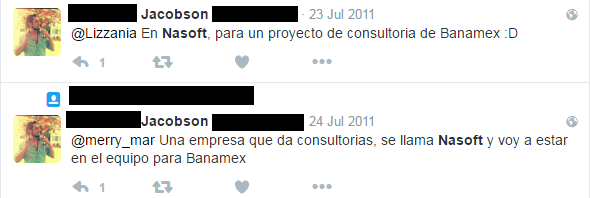
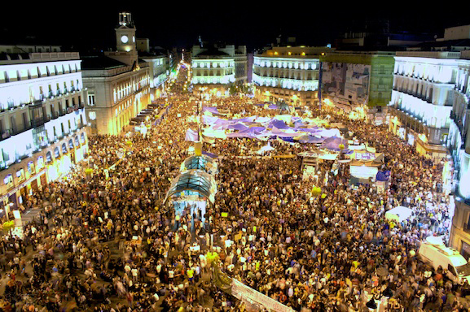

Summary
- Introduction
- Two examples on the use of whistleblowing platforms to initiate strategic litigation
- Example A: Nasoft data breach (Mexico)
- Example B: 15MpaRato XnetLeaks
- Organisational and information-sharing mechanisms
GDPR
- 1 year since it has come into effect
- Sharp increase in both data breach complaints, and data breach notifications
- Article 33 and 34. Data breach notification to data owner and DPA.
- Article 80. Collective redress.

- We use the GlobaLeaks FLOSS application for whistleblowing initiatives
- GlobaLeaks is developed post-WikiLeaks, and benefits from lessons learned
- GlobaLeaks developers say: "We are security people, we can do this better"
- GlobaLeaks developers say: "Lots of people want to fight corruption without taking that much responsibility. If the risk profile of everyone who runs a leak node is reduced, there will be lot more leak nodes."
Example A: Nasoft
- Banamex = Mexico's 2nd biggest bank
- Hyperbole: Banamex.com HACKED! citigroup.com HACKED!

DataBreachLeaks - Nasoft
- Pastebin dump 2013
- DataBreachLeaks launch 2016
- Nasoft leak on DataBreachLeaks 2017
Nasoft document cache
- Excel
- Word
- PDF
- PowerPoint

Human Resources documents

Federal Law on the Protection of Personal Data held by Private Parties (2010)
- In the event of a data breach, data controllers must only notify the DPA. Data controllers are not obliged to notify the data subject.
- This is not like the GDPR. This was the result of intense industry lobbying.
- The DPA is not efficient. DPA lacks technical knowledge. For the Nasoft data breach, burden of proof was put on us.
Leak verification - Last print date
- Uniform peaks on particular dates: June 2001, June 2003, June 2009, June 2010
- Perhaps Nasoft writes some sort of report on June

Leak verification - Internet search


Determine whether or not the persons mentioned in the documents are actually, or were at any time, employees of the company.
Example B: 15MpaRato
- Our team consists of normal, ordinary people, not bankers, lawyers, economists or attorneys
- 2011: Anti-austerity protests in Spain
- 2012: Why don't we have Rato sent to prison in five years' time?
- Attacking an individual is a fascist behaviour [...] What has to be exposed is the corruption of a system, not the misery of life.

Rodrigo Rato
- IMF managing director
- Spanish Vice-president, Spanish Minister of Economy
- Caja Madrid / Bankia president - Bloomberg Worst CEO's of 2012
- Almost half of the EU bailout money in Spain went to Bankia
15MpaRato - Xnetleaks
- Whistleblower: I have a large amount of information that I think paints a very clear picture of institutional corruption in Spain.
- Caja Madrid emails

15MpaRato - "Black credit cards"
- Issued to a who's who of Spanish political life
- 15.5 million euro were spent between 1999 and 2012
4.5 year embezzelment sentence for Rato (2017)
How could the Anti-corruption Prosecutor know of the existence of these Black Cards which, apparently, did not appear in Bankia’s accounts? The same way as every other citizen, through the documents published by the press thanks to our leak.

DBL team as a distributed network
We need 3 types of collaborators:
- A core team composed of 1-2 persons
- A team of 2-3 recipients who receive any materials submitted by whistleblowers
- A wider network of loose associates. Depending on materials submitted by whistleblowers they would be contacted by #1 and #2.
DBL workflows - Flexibility
- The DBL team should be flexible enough that it could tackle the variety of documents about data breaches in the EU that could potentially come through the mailbox
- Panama Papers: There is no one on the team who is fluent in Spanish, although more than half the leaked documents are in that language
DBL workflows - GlobaLeaks website
- An online anonymous mailbox accessed by a whistleblower
- The interface where DBL team members download the documents provided by whistleblowers
- All members of the team are recipients of any information submitted by whistleblowers
DBL workflows - GlobaLeaks and GPG
- We use GPG encryption for better security
- All media files that are submitted by whistleblowers are encrypted
- We use recipient's GPG key for encryption
DBL workflows - Communicate with Whistleblower via GlobaLeaks
- It's up to the whistleblower to decide if there’s going to be any further communications beyond the submitted documents
- If used properly, GL can guarantee that the communications that it mediates with the whistleblowers be anonymous and encrypted
- Within GL, our communications with whistleblowers would take the form of comments akin to discussion threads in internet forums
- If the submission is deleted or if it expires, communications with whistleblower via GlobaLeaks are no longer possible
Is it necessary that we communicate with whistleblowers outside of GlobaLeaks?
If we're going to communicate with whistleblowers outside of GlobaLeaks then:
- All our communications must be encrypted
- We must use OTR, or encrypted email
- We must do a threat analysis
Threat analysis (adapted from EFF)
- What assets do the whistleblowers have that are worth protecting? A job, anonymity, prison, etc.
- Who do we want to protect these assets from?
- How likely is it that we will need to protect them?
- How bad are the consequences if we fail?
- How much trouble are we willing to go through to prevent these consequences?
Counterexample: David Everette Hale and The Intercept
- Like Snowden, Hale was a US defense contractor
- Hale sent documents about drone warfare to The Intercept
- Unencrypted communications are included in an indictment that sees Hale facing up to 50 years in prison

DBL workflows - Communications within the team
- Although GlobaLeaks provides secure forum functionalities, some research avenues could necessitate a solution expressly developed for these types of communication
- It may be worth setting up a dedicated system beyond GlobaLeaks for direct encrypted communications between the members of the team
- Panama Papers: The ICIJ data team has set up a multi-encrypted forum, the iHub, to facilitate international cooperation. They could not have chosen a more appropriate name: over the coming months it really will become the central hub for all our work.
DBL workflows - Communications within the team
- Face-to-face exchanges should not be underestimated
- Regularly scheduled offline meetings can be a great addition to what primarily is a distributed and remote project
- Not everyone on the team will relate to the online forum in the same way, and an offline meeting can be used to keep everyone in sync